书
共 116 条
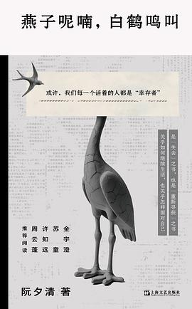
燕子呢喃，白鹤鸣叫
出版2025-05
出版社上海文艺出版社
我らコンタクティ
出版2017-11
出版社講談社
还算有意思
夜晚的潜水艇
出版2020-09
出版社上海三联书店
相当喜欢，很对上电波
明日仍將戀上他
原作名明日も彼女は恋をする
出版2012
出版社台灣角川
1
昨日也曾愛著他
原作名昨日は彼女も恋してた
出版2012-08
出版社台灣角川
水课在轻小说文库里偶然翻到遂把上下两本都看了
很无聊很莫名其妙
很无聊很莫名其妙
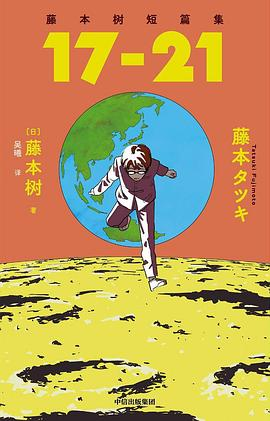
藤本树短篇集 17-21
原作名藤本タツキ短編集17-21
出版2024-01
出版社中信出版社
水课上读完了第二遍
真喜欢
真喜欢
炎拳
原作名ファイアパンチ
出版2016-07
出版社集英社
第一遍是大一刚开学坐在操场上读完的，最近读完了第二遍，很短特的一部作品
雪国（2022）
出版2022-06
补标
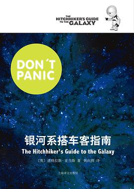
银河系搭车客指南
原作名The Hitchhiker's Guide to the Galaxy
出版2011-07
出版社上海译文出版社
5月8日08:19:57英语课
很电波很无厘头
有几句还是挺有意思的
不是很理解这样的东西怎么改成电影
很电波很无厘头
有几句还是挺有意思的
不是很理解这样的东西怎么改成电影
兄弟
出版2012-09
出版社作家出版社
5月3日10:30:47在宿舍读完
悲惨到荒诞
悲惨到荒诞
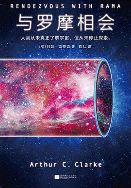
与罗摩相会
原作名Rendezvous with Rama
出版2018-06
出版社江苏凤凰文艺出版社
很久之前看过，已经忘的差不多了，补标
文城
出版2021-03
出版社北京十月文艺出版社
很早之前在集训的时候读过
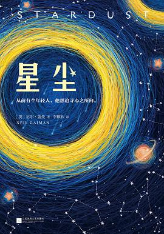
星尘
原作名Stardust
出版2018-09
出版社江苏凤凰文艺出版社
很久之前读过，忘记标了
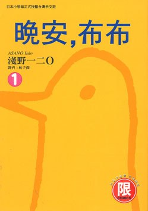
晚安，布布(01)
出版2008-02
出版社台灣東販
（暂无短评）
莫失莫忘
原作名Never Let Me Go
出版2018-06
出版社上海译文出版社
很久之前看过许的，没有看完
忘记了是在集训还是什么时候
在微信读书里翻到，又想起来这本了，于是一天没有听课，看完了
非常不合理的科幻设定，简直是在践踏人类道德伦理…作为捐献者的学生一味顺从而不去寻找真相或者反抗也很难接受
淡淡的回忆感与隐藏着的悲伤贯穿始终
讨厌虚伪的露丝
很喜欢学校的设定，温柔的避风港，虽然背后是被冠以了这样的目的，却为这些可怜的孩子提供了成长的乐园
忘记了是在集训还是什么时候
在微信读书里翻到，又想起来这本了，于是一天没有听课，看完了
非常不合理的科幻设定，简直是在践踏人类道德伦理…作为捐献者的学生一味顺从而不去寻找真相或者反抗也很难接受
淡淡的回忆感与隐藏着的悲伤贯穿始终
讨厌虚伪的露丝
很喜欢学校的设定，温柔的避风港，虽然背后是被冠以了这样的目的，却为这些可怜的孩子提供了成长的乐园
书与钥匙的季节
原作名本と鍵の季節
出版2022-03
出版社四川文艺出版社
两天看完了，还是学校适合看书
看的很舒服的日常推理
两个男主性格过于相似了，看完了还是分不清
以及米泽真的很喜欢写这种“小小的恶”（？）
看的很舒服的日常推理
两个男主性格过于相似了，看完了还是分不清
以及米泽真的很喜欢写这种“小小的恶”（？）
恶意
原作名悪意
出版2016-11
出版社南海出版公司
很久之前老哥送的一整套，四本
迟来的翅膀
原作名いまさら翼といわれても
出版2017-07
出版社百花洲文艺出版社
10月30日17:36习思
两人距离的概算
原作名ふたりの距離の概算
出版2014-06
出版社百花洲文艺出版社
10月23日19:31:45
于晚自习读完
活动室的书
于晚自习读完
活动室的书
恋爱寄生虫
原作名恋する寄生虫
出版2019-04
出版社四川美术出版社
花了半节水课，半节线代看完了
相当动人的故事，三秋缒的书适合偶尔读上一本
相当动人的故事，三秋缒的书适合偶尔读上一本
尘埃落定
出版2020-10
出版社浙江文艺出版社
百年孤独+红楼梦的感觉
阿来，语言大师
阿来，语言大师
红手指
原作名赤い指
出版2015-01
出版社南海出版公司
结尾怪怪的
愚者的片尾
原作名愚者のエンドロール
出版2013-08
出版社湖南美术出版社
（暂无短评）
冰菓
原作名氷菓
出版2013-06
出版社湖南美术出版社
（暂无短评）
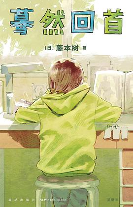
蓦然回首
原作名ルックバック
出版2022-08
出版社新星出版社
9月28日于操场读完
第一遍有点没有看懂
第一遍有点没有看懂
三日间的幸福
原作名三日間の幸福
出版2017-03
出版社百花洲文艺出版社
第二遍
抛开诸多不合理之处，很多想法其实还很有意思
抛开诸多不合理之处，很多想法其实还很有意思
通往夏天的隧道，再见的出口
出版2022-11
出版社百花文艺出版社
像是高中生会写出来的小说
人物有些许单薄，故事不复杂但也还算动人
文笔实在一般
人物有些许单薄，故事不复杂但也还算动人
文笔实在一般
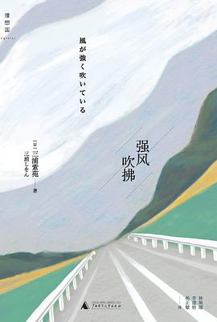
强风吹拂
原作名风が强く吹いている
出版2015-01
出版社广西师范大学出版社
9.0评分偏高，打个三星中和一下
很热血，很青春，跑步的描写也很动人
很热血，很青春，跑步的描写也很动人
祈念守护人
原作名クスノキの番人
出版2020-06
出版社南海出版公司
晚自习读完，谢谢jx
没有期待中那么好
结构很乱，莫名其妙的感情线，过于直白的表述
没有期待中那么好
结构很乱，莫名其妙的感情线，过于直白的表述
圣女的救济
原作名聖女の救済
出版2017-01
出版社南海出版公司
（暂无短评）
冰菓漫画 13-14
zzd
在细雨中呼喊
出版2012-11
出版社作家出版社
集训 两天读完
无尽的孤独 悲情是底色
无尽的孤独 悲情是底色
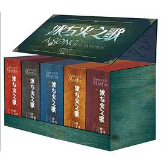
冰与火之歌
原作名A Song of Ice and Fire
出版2013-10
出版社重庆出版社
（暂无短评）
灿烂千阳
原作名A Thousand Splendid Suns
出版2007-09
出版社上海人民出版社
7月26日21:39晚自习
第七天
出版2013-06
出版社新星出版社
荒诞而又现实
多么残忍的人，才能这样去描写不幸
多么残忍的人，才能这样去描写不幸
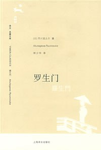
罗生门
原作名羅生門
出版2008-07
出版社上海译文出版社
（暂无短评）
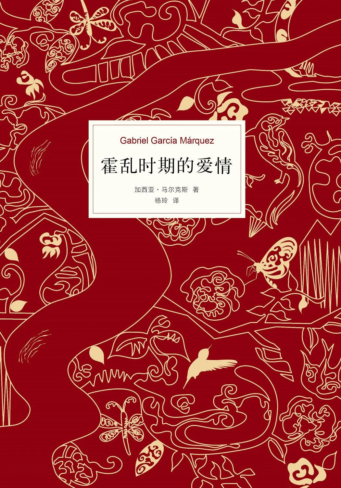
霍乱时期的爱情
原作名El amor en los tiempos del cólera
出版2012-09
出版社南海出版公司
（暂无短评）
挪威的森林
原作名ノルウェイの森
出版2001-02
出版社上海译文出版社
不喜欢男主
被很多细节打动
过多的sex看的我一尬一尬的…
被很多细节打动
过多的sex看的我一尬一尬的…
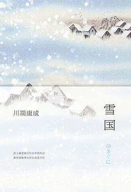
雪国
原作名雪国 [Yukiguni]
出版2013-09
出版社南海出版公司
细腻
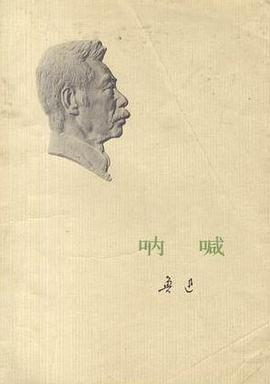
呐喊
出版1973-03
出版社人民文学出版社
（暂无短评）
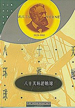
八十天环游地球
出版1958-02
出版社中国青年出版社
（暂无短评）
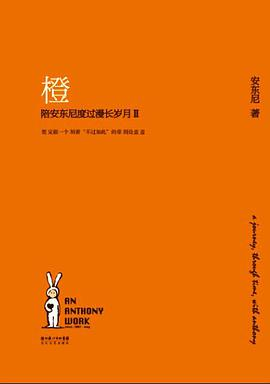
橙
出版2010-10
出版社长江文艺出版社
（暂无短评）
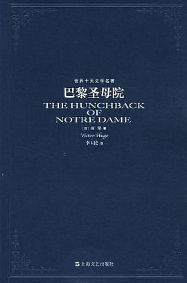
巴黎圣母院
原作名The Hunchback of Notre Dame
出版2007-07
出版社上海文艺出版社
（暂无短评）
瓦尔登湖
原作名walden
出版2006-08
出版社上海译文出版社
（暂无短评）
24个比利
原作名The Minds of Billy Milligan
出版2015-06
出版社湖岸出版／外语教学与研究出版社
（暂无短评）
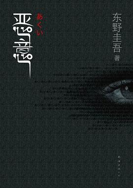
恶意
原作名悪意
出版2009-06
出版社南海出版公司
（暂无短评）
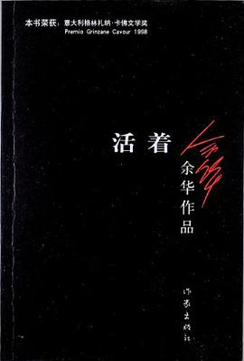
活着
出版2012-08
出版社作家出版社
（暂无短评）

钢铁是怎样炼成的
原作名Как закалялась сталь
出版2006-08
出版社上海译文出版社
（暂无短评）
父与子全集
出版2003-04
出版社中国工人出版社
（暂无短评）
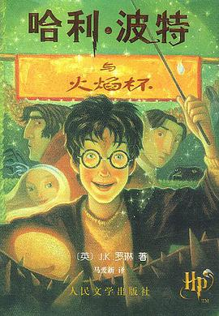
哈利·波特与火焰杯
原作名Harry Potter and the Goblet of Fire
出版2001-05
出版社人民文学出版社
（暂无短评）
狼王梦
出版2009-10
出版社浙江少年儿童出版社
（暂无短评）
さよなら絵梨 [Sayonara Eri]
原作名さよなら絵梨
出版2022-07
出版社集英社
独特
放学后
原作名放課後
出版2017-09
出版社南海出版公司
男主老婆这个人物塑造的也太单薄了，却偏偏要在结尾这样给她安排一个情节
太年轻
原作名Young Jane Young
出版2018-05
出版社江苏凤凰文艺出版社
（暂无短评）
岛上书店
原作名The Storied Life of A. J. Fikry
出版2015-05
出版社江苏凤凰文艺出版社
（暂无短评）
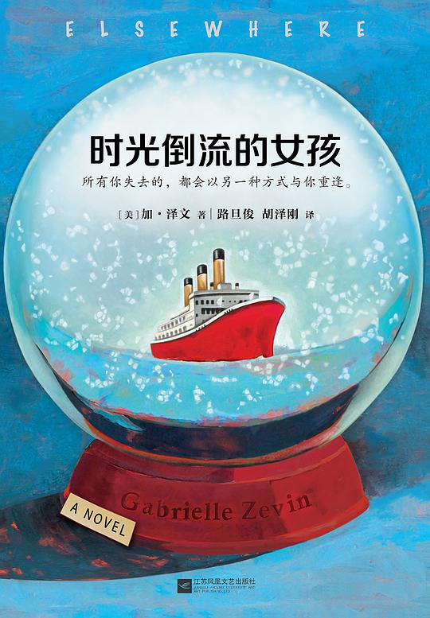
时光倒流的女孩
原作名Elsewhere
出版2017-05
出版社江苏凤凰文艺出版社
加泽文最喜欢的还是这本
玛格丽特小镇
原作名Margarettown
出版2016-06
出版社江苏凤凰文艺出版社
（暂无短评）
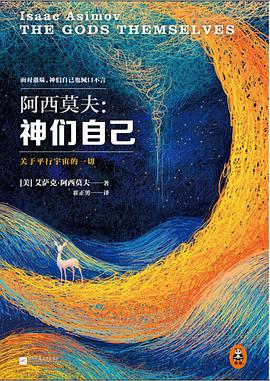
神们自己
原作名The Gods Themselves
出版2014-12
出版社江苏凤凰文艺出版社
（暂无短评）
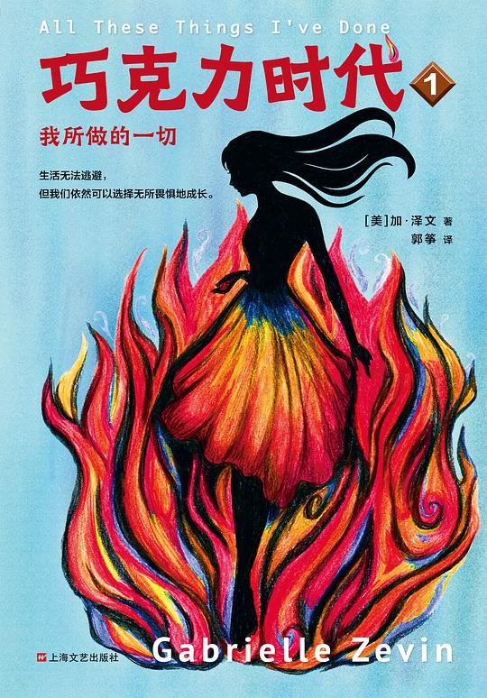
巧克力时代
原作名All These Things I've Done
出版2018
出版社上海文艺出版社
（暂无短评）
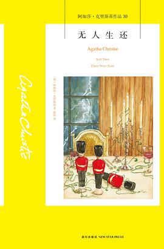
无人生还
原作名And Then There Were None
出版2013-07
出版社新星出版社
8月6日晚 两天读完
感谢wkd
不是很喜欢结局
感谢wkd
不是很喜欢结局
1984
出版2016-11
出版社中国画报出版社
8月2日 集训 重读
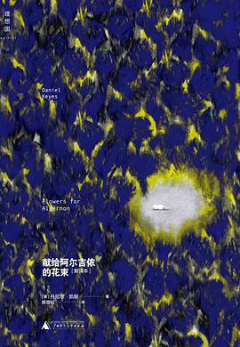
献给阿尔吉侬的花束
原作名Flowers for Algernon
出版2015-04
出版社广西师范大学出版社
7月31日集训时读完
寂寞的游戏
出版2017-09
出版社北京联合出版公司
很想推荐给别人
许三观卖血记
出版1998-09
出版社南海出版公司
（暂无短评）
神奇动物在哪里
原作名Fantastic beasts and where to find them
出版2017-04
出版社人民文学出版社
（暂无短评）
你的名字
原作名君の名は。
出版2017-01
出版社百花洲文艺出版社
凯翔送的
许三观卖血记
出版2012-09
出版社作家出版社
最近读完。结尾实在虐心…

飞吧，黑居易 刘耀辉诗意成长书系
zgs
海底两万里
出版2002-09
出版社译林出版社
（暂无短评）

骆驼祥子
出版2000-03
出版社人民文学出版社
（暂无短评）
夏洛的网
原作名Charlotte's Web
出版2004-05
出版社上海译文出版社
（暂无短评）

草房子
出版2009-06
出版社江苏少年儿童出版社
（暂无短评）
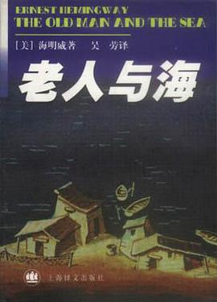
老人与海
原作名The Old Man and the Sea
出版1999-10
出版社上海译文出版社
（暂无短评）
巴黎圣母院
原作名Notre-Dame de Paris
出版1982-06
出版社人民文学出版社
（暂无短评）
简爱（英文全本）
原作名Jane Eyre
出版2003-11
出版社世界图书出版公司
甜
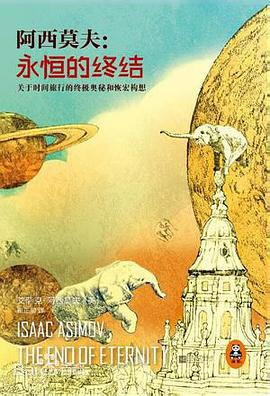
永恒的终结
原作名The End of Eternity
出版2014-09
出版社江苏凤凰文艺出版社
在医院里手术前读的 记得还带了一本瓦尔登湖 但只有这本看完了
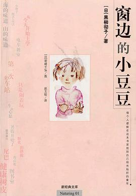
窗边的小豆豆
原作名窓ぎわのトットちゃん
出版2003-01
出版社南海出版公司
大都忘记了 有时间打算重温
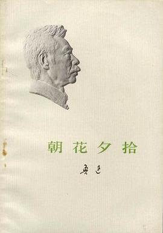
朝花夕拾
出版1972-04
出版社人民文学出版社
（暂无短评）
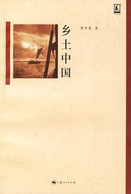
乡土中国
原作名From the Soil: The Foundations of Chinese Society
出版2006-04
出版社上海人民出版社
有所收获 也是第一次读学术类作品
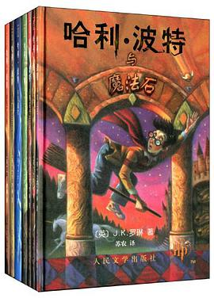
哈利·波特
原作名Harry Potter
出版2008
出版社人民文学出版社
（暂无短评）
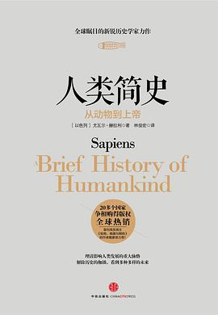
人类简史
原作名A brief history of humankind
出版2014-11
出版社中信出版社
（暂无短评）
福尔摩斯探案全集（上中下）
原作名The Complete Sherlock Holmes
出版1981-08
出版社群众出版社
（暂无短评）
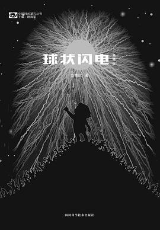
球状闪电
出版2016-09
出版社四川科学技术出版社
（暂无短评）
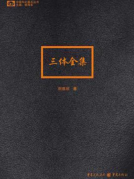
三体全集
原作名地球往事
出版2012-01
出版社重庆出版社
（暂无短评）
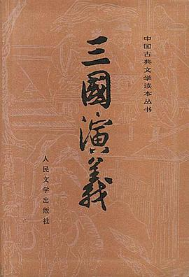
三国演义（全二册）
原作名三国演义
出版1998-05
出版社人民文学出版社
小学时候就很喜欢
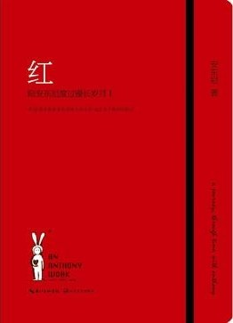
红
出版2012
出版社长江文艺出版社
（暂无短评）
你当像鸟飞往你的山
原作名Educated:A Memoir
出版2019-10
出版社南海出版公司
喜欢第二部分的结尾，被戳到了
每个人都在用自己的方式爱着自己的家人
每个人都在用自己的方式爱着自己的家人
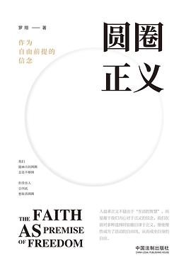
圆圈正义
出版2019-08
出版社中国法制出版社
自习课上借了同学的读了一节课
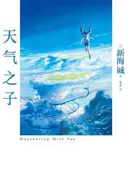
天气之子
原作名天気の子
出版2019-09
出版社百花洲文艺出版社
（暂无短评）
解忧杂货店
原作名ナミヤ雑貨店の奇蹟
出版2014-05
出版社南海出版公司
（暂无短评）
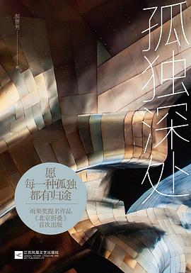
孤独深处
出版2016-08
出版社江苏凤凰文艺出版社
（暂无短评）
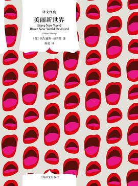
美丽新世界
原作名BRAVE NEW WORLD, BRAVE NEW WORLD REVISITED
出版2017-06
出版社上海译文出版社
（暂无短评）
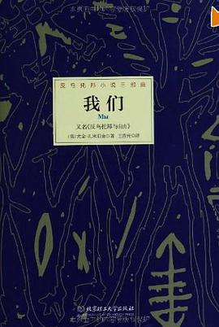
我们
出版2013-11
出版社北京理工大学出版社
（暂无短评）
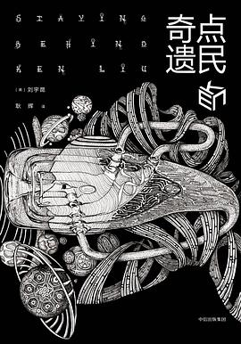
奇点遗民
出版2017-09
出版社中信出版社
（暂无短评）
肖申克的救赎
原作名Different Seasons
出版2006-07
出版社人民文学出版社
不太喜欢第二个故事
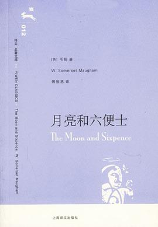
月亮和六便士
原作名The Moon and Sixpence
出版2006-08
出版社上海译文出版社
（暂无短评）
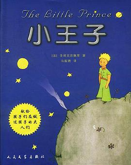
小王子
原作名Le Petit Prince
出版2003-08
出版社人民文学出版社
完美的童话
动物农场
原作名Animal Farm
出版2007-03
出版社上海译文出版社
结局看的背后一凉
追风筝的人
原作名The Kite Runner
出版2006-05
出版社上海人民出版社
（暂无短评）
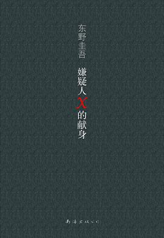
嫌疑人X的献身
原作名容疑者Xの献身
出版2008-09
出版社南海出版公司
（暂无短评）
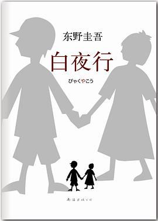
白夜行
出版2013-01
出版社南海出版公司
（暂无短评）
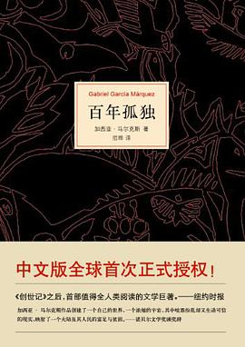
百年孤独
原作名Cien años de soledad
出版2011-06
出版社南海出版公司
2021.8.18
读的时候感觉过于晦涩
以及书中很多细节让人回味
感觉自己还是不太适合啃这种书（捂脸
2022年9月14日重读第二遍
第二遍弄懂了很多东西，不得不感慨作者的伟大…恰到好处的细节和出乎意料又在情理之中的情节
读的时候感觉过于晦涩
以及书中很多细节让人回味
感觉自己还是不太适合啃这种书（捂脸
2022年9月14日重读第二遍
第二遍弄懂了很多东西，不得不感慨作者的伟大…恰到好处的细节和出乎意料又在情理之中的情节
1984
原作名Nineteen Eighty-Four
出版2010-04
出版社北京十月文艺出版社
（暂无短评）
三体Ⅱ
原作名黑暗森林
出版2008-05
出版社重庆出版社
（暂无短评）
三体
出版2008-01
出版社重庆出版社
把文革、游戏、未来结合在一起，不得不佩服
三体Ⅲ
原作名死神永生
出版2010-11
出版社重庆出版社
说实话刘慈欣笔下的女性都写的不太好啊我觉得
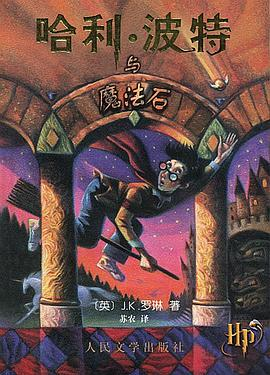
哈利·波特与魔法石
原作名Harry Potter and the Philosopher's Stone
出版2000-09
出版社人民文学出版社
（暂无短评）
哈利·波特与凤凰社
原作名Harry Potter and the Order of the Phoenix
出版2003-09
出版社人民文学出版社
翻译错误不少……
哈利·波特与被诅咒的孩子
原作名Harry Potter and the Cursed Child
出版2016-10
出版社人民文学出版社
看到JK罗琳就立刻借来读完，但并不是那么好，有一点失望。
---
21.8.18
突然想起来自己很喜欢金妮说的那句话
有时间找找
---
21.8.18
突然想起来自己很喜欢金妮说的那句话
有时间找找
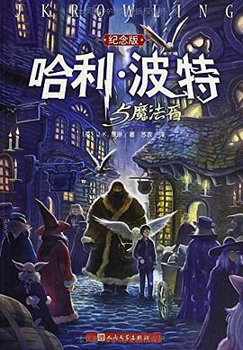
哈利·波特与魔法石（纪念版）
原作名Harry Potter and the Philosopher's Stone
出版2000-09
出版社人民文学出版社
（暂无短评）
哈利·波特与密室
原作名Harry Potter and the Chamber of Secrets
出版2000-09
出版社人民文学出版社
（暂无短评）
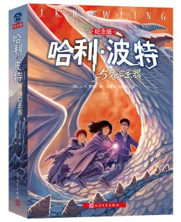
哈利·波特与死亡圣器
原作名Harry Potter and the Deathly Hallows
出版2007-10
出版社人民文学出版社
（暂无短评）
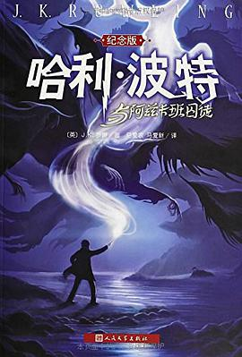
哈利·波特与阿兹卡班囚徒
原作名Harry Potter and the Prisoner of Azkaban
出版2009-04
出版社人民文学出版社
（暂无短评）
哈利·波特与火焰杯
原作名Harry Potter and the Goblet of Fire
出版2001-05
出版社人民文学出版社
（暂无短评）
哈利·波特与"混血王子"
原作名Harry Potter and the Half-Blood Prince
出版2005-10
出版社人民文学出版社
（暂无短评）
哈利·波特与凤凰社
原作名Harry Potter and the Order of Phoenix
出版2009-04
出版社人民文学出版社
（暂无短评）
勉勉强强算得上有趣